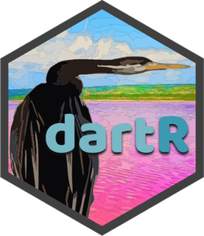

dartR 
An accessible genetic analysis platform for conservation, ecology and agriculture
Publication: 
Zenodo: 
Overview
dartR is a user-friendly R package that delivers a variety of analyses and pipelines on the same platform, as well as excellent user support via high-quality tutorials and documentation.
dartR is a collaboration between the University of Canberra, CSIRO and Diversity Arrays Technology, and is supported with funding from the ACT Priority Investment Program, CSIRO and the University of Canberra.


Installation
dartR is on CRAN, so to install it simply type:
install.packages("dartR")Because of CRAN limitations, the default installation does not include all packages needed to run all the functions; hence, specialised analyses need the installation of additional packages. The following code guarantees that all necessary packages for all dartR analyses are set up and ready to go.
You can install the development version of dartR from GitHub with:
gl.install.vanilla.dartR(flavour = "dev")Please consult this installation tutorial if you run into any problems during setup.
Usage
dartR provides several functions for handling all the steps involved in genetic data analysis, from reading multiple data input formats to manipulating, filtering, exploring and analysing the data.

We use the prefix ‘gl’ in function names to acknowledge the use of the genlight object from package adegenet as our input format.
In most cases, the following term in the function name indicates a subset of functions.
Similarly, in most cases the first function parameter (input) is the genlight object.
For instance, you might use the code below to generate a report and then filter your data based on the percentage of missing data:
library(dartR)
test <- platypus.gl
rep <- gl.report.callrate(test)
test_1 <- gl.filter.callrate(test)Getting started
Are you a R rookie? If you want to learn R and RStudio without any fuss, have a look at our R-refresher tutorial.
Let’s get started by reading your genetic data into
dartR; if you have DArT data, follow this tutorial; if not, follow this one.Checking out our data manipulation tutorial is the easiest way to get your feet wet with
dartR.This tutorial will provide some pointers on how to filter your data effectively, an important step that depends on making sound threshold assessments.
Check out our simulations tutorial to learn more about our simulation model, a powerful tool for illuminating intricate evolutionary and genetic processes.
In more advanced topics, check our technical notes on Genetic Distances and their Visualization in Population Genetics and Fixed Difference Analysis.
Getting help
Google groups Q&A forum in support of users can be accessed here.
The RStudio community provides a welcoming environment in which to ask any inquiry.
Answers to frequently asked topics may usually be found on Stack Overflow.
Contribute
If you want to help shape the future of dartR, this tutorial is for you.